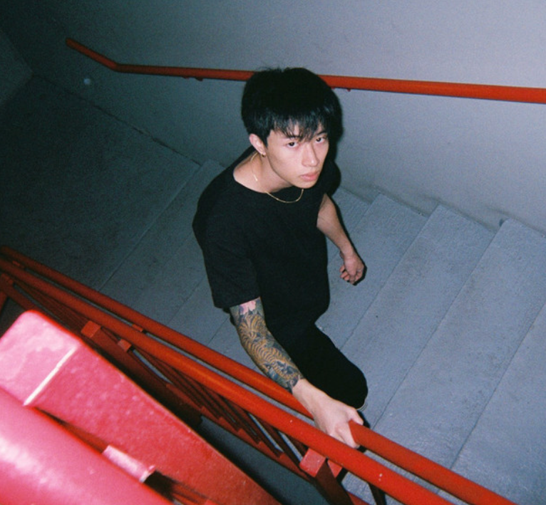
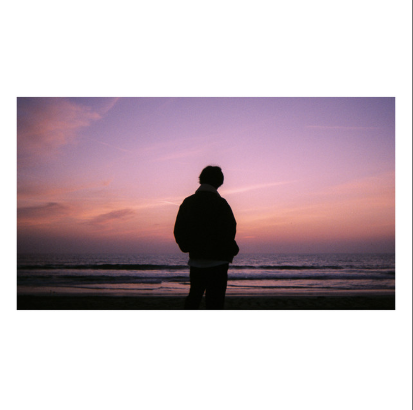
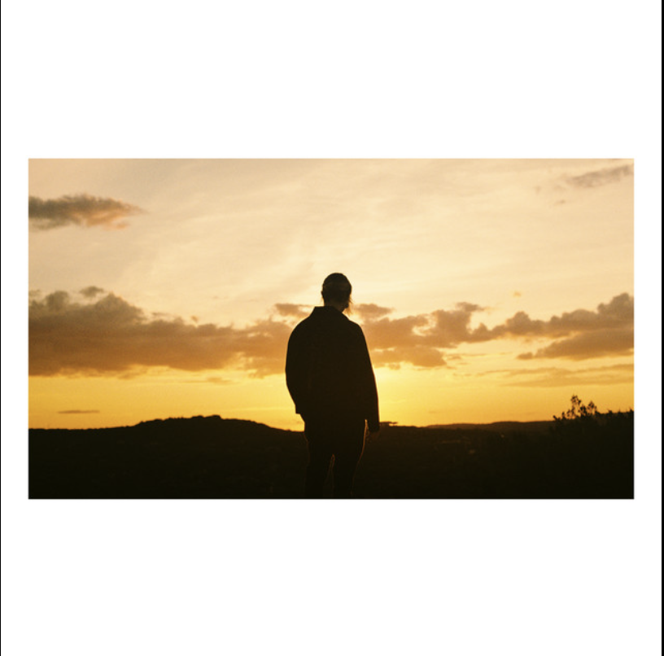
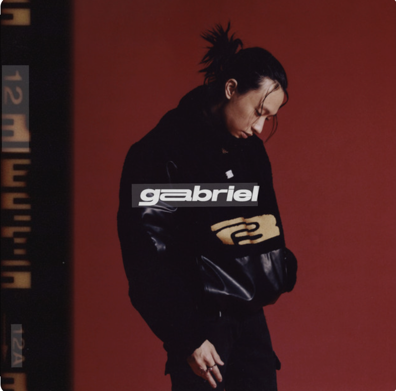
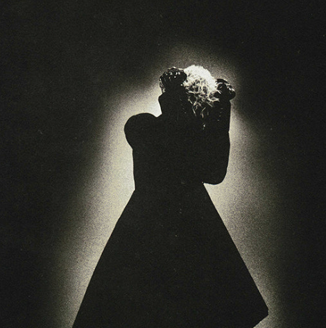
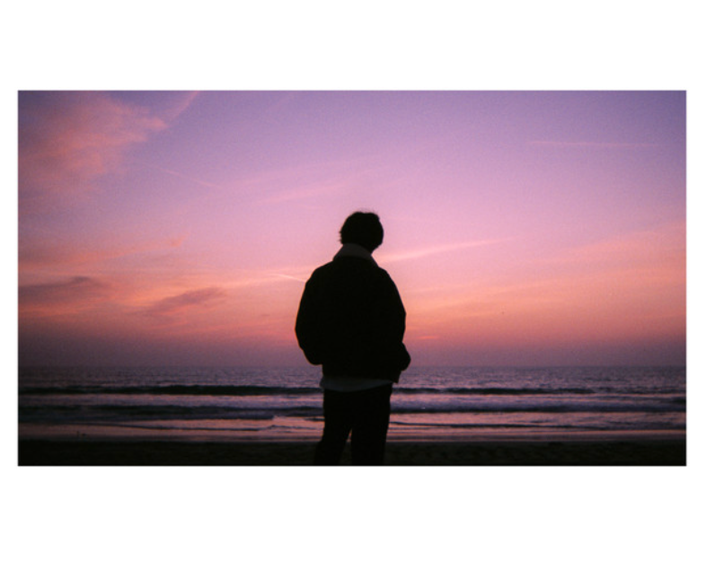
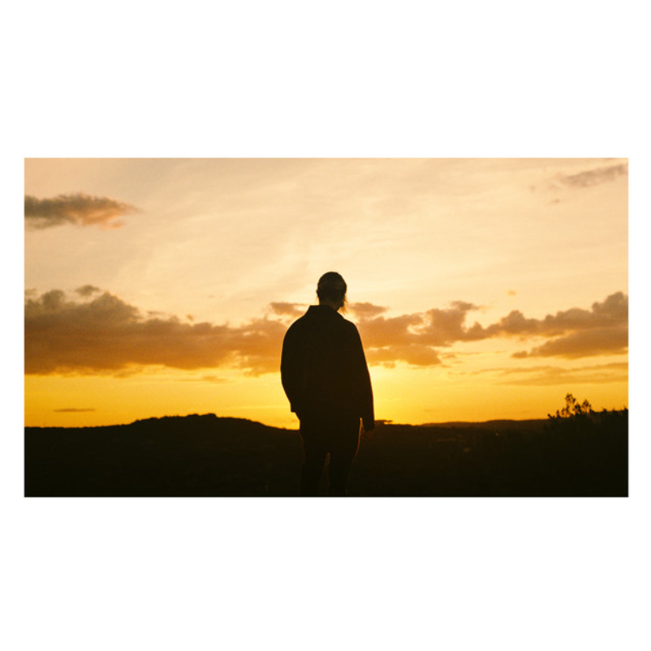
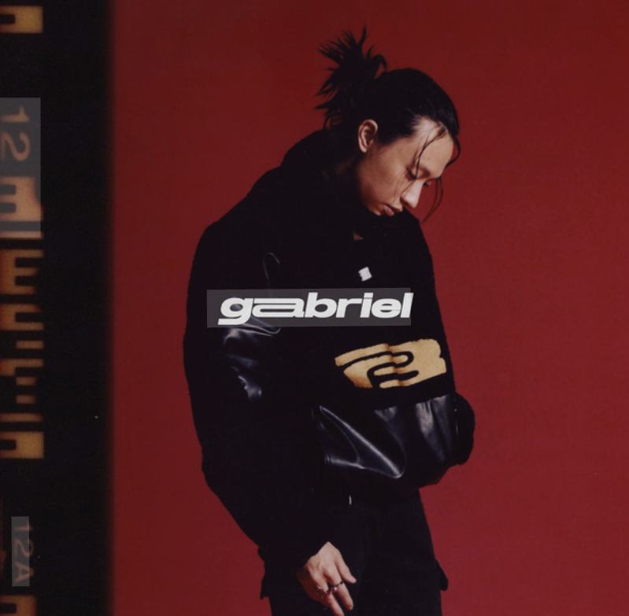
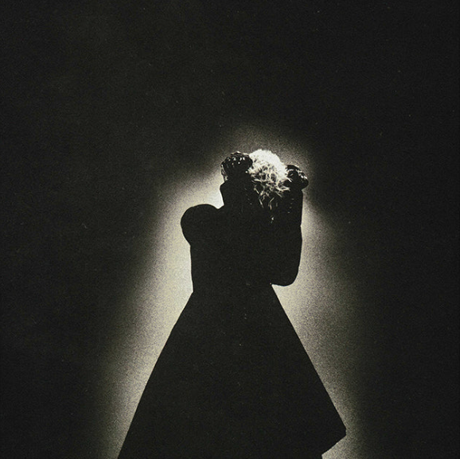

No Code Website Builder表演的本质，是让情绪成为一种形式——表演用情感诉说，设计用沉默表达，不同的语言却拥有同样的灵魂，让人感受到那些说不出口的情绪，不喧哗，却更深刻。

Falling into the echoes of my own mind, searching for a heartbeat that feels like home.
陷入自我心底的回声，寻找那颗像家的心跳。

Patching the cracks in my soul, one note at a time, hoping it won’t break again.
用每一段旋律修补灵魂的裂痕，希望它不会再破碎。

Even in the quiet moments, your memory lingers like the warmth of sunlight on my skin.
即便在最安静的时刻，你的记忆像阳光洒在皮肤上般温暖。

Facing the shadows I once ran from, learning that they hold pieces of me I need to keep.
直面曾逃避的阴影，发现它们藏着我必须保留的自己。

Facing the shadows I once ran from, learning that they hold pieces of me I need to keep.
直面曾逃避的阴影，发现它们藏着我必须保留的自己。
《THE REAPER》是美国创作型歌手keshi于2018年发行的一张迷你专辑（EP）。该作品延续了keshi将低保真（lo-fi）节拍、独立流行与R&B元素融合的独特风格，展现了他早期独立音乐人时期的情感表达与制作能力。
发行时间：2018年11月
类型：Lo-fi / R&B / 独立流行
制作人：keshi（全权创作与制作）
代表曲目："like i need u"、"2 soon"、"as long as it takes you"
发行厂牌：自发行（后由Island Records再版）
创作背景
这张EP创作于keshi仍在休斯敦担任护士期间，他在自家卧室录制并混音。歌曲多围绕失落、孤独与自我探索，歌词内敛细腻，旋律温柔。keshi通过自制音色与简约节奏营造出梦幻且私密的氛围，为其后续作品奠定了基调。
音乐风格与主题
EP整体融合了R&B的柔和律动与lo-fi制作质感，吉他音色温润、声线轻叹。主题聚焦于关系的疏离与内心的疗愈，尤其在《like i need u》中体现出对脆弱情感的诚实表达。

《bandaids》是美国创作歌手 keshi 于 2020 年发行的一张迷你专辑（EP）。作品延续了 keshi 标志性的低保真（lo-fi）流行与 R&B 融合风格，以柔和人声与极简制作展现情感自省。该 EP 进一步巩固了他在独立音乐界的影响力。
发行日期：2020 年 3 月 24 日
类型：Lo-fi / R&B / 独立流行
唱片公司：Island Records
曲目数量：5 首
音乐与主题
《bandaids》延续 keshi 对孤独、疗愈与人际关系的探索。EP 标题寓意“创口贴”式的暂时修复，象征情感创伤与恢复。整体音色温暖，伴随梦幻吉他与轻盈节奏，构筑出一种“忧郁而安静”的氛围，代表 keshi 独特的卧室制作美学。
曲目与亮点
EP 包含《alright》、《less of you》、《blue》、《drunk》、《right here》等作品。其中《less of you》成为代表作之一，在串流平台播放量极高。歌曲编曲简洁，融合 lo-fi 鼓点与细腻人声层次，表现出情感距离与依恋的矛盾。

《always》是美国创作歌手keshi于2020年发行的EP，收录于他早期的个人音乐系列中。这张作品延续了Keshi融合R&B、lo-fi与独立流行的风格，主题围绕孤独、自省与爱情的脆弱感，巩固了他在独立音乐领域的代表性。
发行时间：2020年
类型：R&B / lo-fi / 独立流行
唱片公司：Island Records
曲目数：5首
背景与创作
《always》是keshi的第三张EP，延续了他从《skeletons》和《bandaids》建立起的个人叙事风格。Keshi在录音与制作上继续独立操作，从旋律编写到混音皆由本人完成。作品中以柔和的吉他、极简鼓点和空灵声线构筑出一种内省、梦幻的氛围，展现了他在卧室流行音乐中的精致制作功力。
音乐主题与风格
EP整体围绕“失去与重生”的情绪线索展开，歌词多描绘情感的疏离与自我疗愈。代表曲如〈always〉和〈drunk〉以极简节奏和真挚唱腔塑造出深夜思绪感。keshi的声线与细腻编曲成为其标志性特征，使作品兼具感性与现代感。

《GABRIEL》是美国创作歌手 keshi 于2022年发行的首张正式录音室专辑。该专辑延续他将独立流行（indie pop）、节奏蓝调（R&B）与低保真（lo-fi）元素融合的独特风格，并以自我探索与成长为核心主题。它标志着keshi从网络音乐人向主流艺人的过渡。
发行日期：2022年3月25日
唱片公司：Island Records
类型：流行、R&B、lo-fi、另类流行
主要单曲：“GET IT”、“SOMEBODY”、“TOUCH”
背景与创作
《GABRIEL》的创作历程持续约两年，期间keshi在疫情期间反思自我与音乐方向。专辑名称取自“Gabriel”意象，象征守护与重生。keshi表示该专辑记录了他从迷茫到自我接纳的过程，歌曲多以内省与人际关系为主线。
音乐风格与制作
专辑融合吉他弹奏、极简节拍与细腻声线，体现keshi一贯的卧室制作美学，同时加入更成熟的制作手法。除自制曲目外，部分制作由Elie Rizk协助完成，使整体音效更具层次与空间感。

《Requiem》是美国创作歌手 keshi 于 2024 年发行的一张迷你专辑（EP）。作品延续了他将低吟吟唱、R&B 与独立流行元素融合的独特风格，以更成熟的制作与情感深度，标志着他音乐创作的进一步演进。
发行日期： 2024 年
类型： R&B / 另类流行 / lo-fi
厂牌： Island Records
曲目数： 约 6 首
背景与制作
《Requiem》延续了 keshi 在首张专辑《Gabriel》中的叙事语调，围绕失落、成长与自我疗愈展开。制作上由 keshi 亲自操刀，并与长期合作的制作团队协作完成。EP 名“Requiem”（安魂曲）象征一次精神告别，也代表艺术家告别旧的自我与创作阶段。
音乐与主题
作品融合 lo-fi 吉他音色、层次丰富的和声及电子鼓点，营造出温柔而内省的氛围。歌词聚焦于孤独、怀旧与情感释放等主题，体现出 keshi 一贯的自我剖析式创作。部分曲目还尝试更具节奏感的流行结构，使整张 EP 在情绪张力与旋律之间保持平衡。
No Code Website Builder